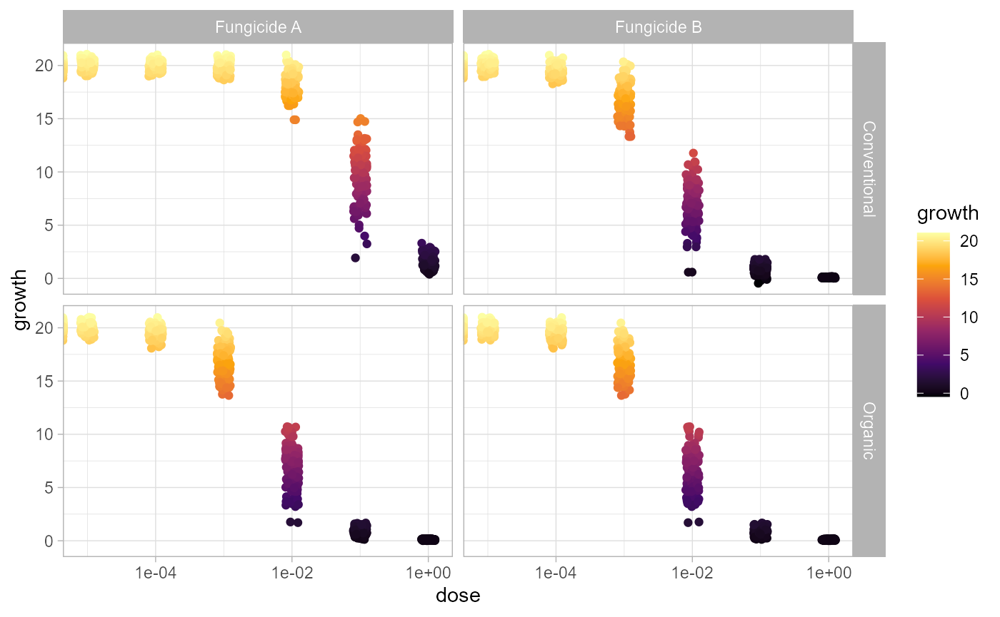
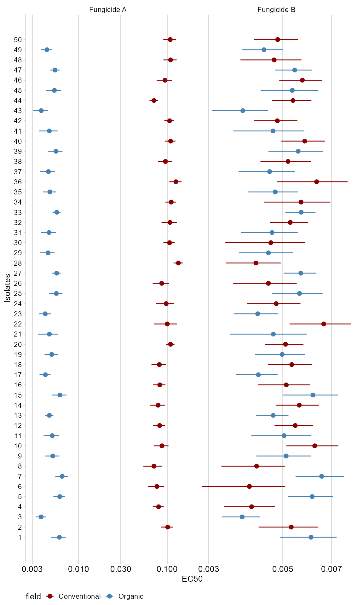
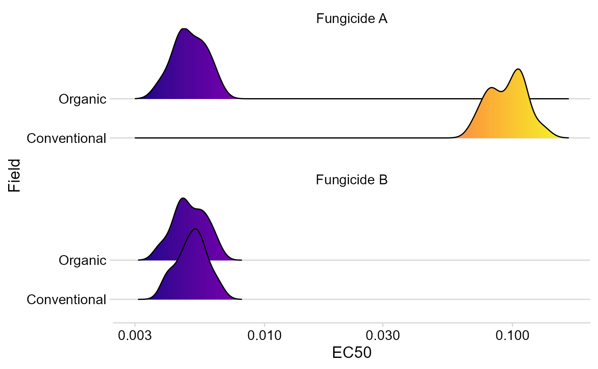

how_to_use.Rmdec50estimator provides a quick, easy and automated way of estimating the effective control to 50% of growth inhibition (EC50) from multi isolate data sets. It also is optimized to deal with stratified data.
In the package I provide this dataset multi_isolate where contain simulated data of mycelial growth under increasing fungicide doses for 50 fungal isolates, two types of field (conventional and organic), and two different fungicides.
data(multi_isolate)
Use ggplot2 to plot the data
multi_isolate %>% ggplot(aes(dose, growth, color = growth))+ geom_jitter(width = 0.1)+ facet_grid(field~fungicida)+ scale_x_log10()+ scale_color_viridis_c(option = "B",direction = 1)+ theme_light()
## Warning: Transformation introduced infinite values in continuous x-axis
The function estimate_EC50() is used to calculate EC50s for each isolate within each culture system and for each fungicide. As in function drc::drm(), in estimate_EC50() you also need to provide the formula. Provide also the argument data, which is an object data.frame where your data are. Indicate the column that identifies each isolate in the argument isolate_col. If your data is stratified (by region, cropping system or year, for example) indicate the columns in the argument strata_col. Indicate the model to be used in the argument fct (same as in the package drc). Please, inform the model function with the :: operator to inform the drc package(e.g. drc::LL.4()). If you want confidence intervals to be estimated, indicate in the argument interval (it works the same way it works in the function drc::drm()).
df_ec50 = estimate_EC50(growth~dose, data =multi_isolate, isolate_col = "isolate", strata_col = c("field","fungicida"), interval = "delta", fct = drc::LL.3()) head(df_ec50)
## ID field fungicida Estimate Std..Error Lower Upper
## 1 1 Organic Fungicide A 0.006072082 0.0005740341 0.004902813 0.007241351
## 2 3 Organic Fungicide A 0.003776957 0.0002432571 0.003281459 0.004272456
## 3 5 Organic Fungicide A 0.006122508 0.0004575060 0.005190599 0.007054418
## 4 7 Organic Fungicide A 0.006532201 0.0005278730 0.005456959 0.007607443
## 5 9 Organic Fungicide A 0.005115267 0.0004672111 0.004163589 0.006066945
## 6 11 Organic Fungicide A 0.005044116 0.0005000569 0.004025533 0.006062698ATTENTION: In this tutorial I used the same model (drc::LL.4()) for the two fungicides (A and B). However, it is important to check which model is most appropriate for your data. To do this, before running the function estimate_EC50() for all your data, use the function drm() to adjust a model for some isolates and later use the function drc::mselect() to calculate the statistics that will help you select the best model. Tip: the lower the AIC value, the better the model. For more information, run the command ?mselecton in your Console.
See EC50 estimates and confidence intervals for all isolates.
as.data.frame(df_ec50) %>% mutate(ID = as.numeric(ID)) %>% ggplot(aes(ID, Estimate, color = field))+ geom_point(size = 2)+ geom_errorbar(aes(ymin=Lower,ymax = Upper, color = field), width=0)+ facet_wrap(~fungicida, scales = "free_x", ncol = 2)+ scale_y_log10()+ scale_x_continuous(breaks = 1:50)+ scale_color_manual(values = c("darkred", "steelblue"))+ labs(x = "Isolates", y = "EC50")+ theme_minimal_vgrid(font_size = 10)+ coord_flip()+ theme(axis.text.x = element_text(size=10), legend.position = "bottom")
 Use the package ggridges to create density charts.
as.data.frame(df_ec50) %>% ggplot(aes(Estimate, field, fill = stat(x)))+ geom_density_ridges_gradient(alpha = 0.3)+ scale_x_log10()+ scale_fill_viridis_c(option = "C")+ facet_wrap(~fungicida, nrow = 2)+ theme_minimal_hgrid()+ labs(x = "EC50", y = "Field")+ theme(legend.position = "none")
## Picking joint bandwidth of 0.0328## Picking joint bandwidth of 0.0285